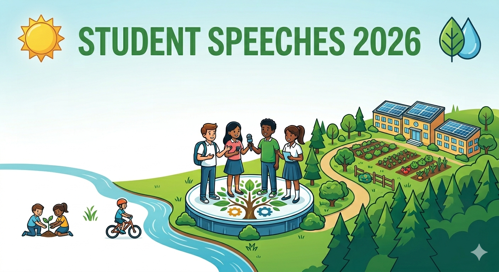

World Environment Day is celebrated every year on June 5 to raise awareness about environmental protection. The 2026 theme is "Inspired by Nature. For Climate. For Our Future."
If you're looking for a speech for school assembly, competition, or classroom presentation, use the speech samples below based on your required word count and speaking time.
⭐ World Environment Day Speech Samples
Speech Word Count Options
- 100 Words Speech
- 120 Words Speech
- 150 Words Speech
- 200 Words Speech
- 250 Words Speech
- 300 Words Speech
- 500 Words Speech
- 1000 Words Speech
Why Your Speech Matters More Than You Think
You might think, "I'm just a student — who's going to listen to me?"
Here's the answer: everyone.
A recent U-Report poll found that over 60 per cent of children and young people feel that their actions will improve climate policies in their country. That confidence is backed by real influence. Youth-led environmental activism has exploded in popularity in recent years, with young people speaking up, becoming a catalyst for change, and demanding action.
At the Extraordinary Session of the World Meteorological Congress held in October 2025, WMO adopted the first WMO Youth Action Plan, marking a structured approach to integrating youth perspectives into its work and empowering the next generation of leaders.
In short: the world is not just allowing students to speak about the environment. The world is waiting for students to speak.
World Environment Day Speech for Students 2026: Sample Speeches
Short Speech (200 Words or 2-3 mins) — For Primary School Students (Class 3–5)
Good morning, respected teachers and my dear friends.
Today is World Environment Day — a day the whole world comes together to say: we care about our planet.
The theme this year is "Inspired by Nature. For Climate. For Our Future." That means we look at nature — at trees, rivers, birds, and soil — and we learn from them. Nature knows how to balance itself. We are the ones who disturb that balance.
Friends, have you ever seen a tree give shade on a hot day? Or a river bring water to a dry field? Nature has been taking care of us for millions of years. Isn't it time we took care of it?
I am just a student. But I can plant a sapling. I can say no to plastic. I can switch off a fan when I leave a room. Small actions, done by all of us, create big change.
On this World Environment Day, I make one promise — to do at least one thing every day that helps the Earth breathe easier. Will you join me?
Thank you.
Medium Speech (300-400 Words or 4–5 Minutes) — For Middle School Students (Class 6–8)

Good morning, honourable principal, respected teachers, and my fellow students.
We celebrate World Environment Day on the 5th of June every year. But 2026 is not an ordinary year for this celebration. This year, the United Nations has given us a theme that is both a reminder and a call to action: "Inspired by Nature. For Climate. For Our Future."
Look around you. The trees in our school garden didn't grow because someone asked them to — they grew because that is what nature does. It creates, sustains, and renews. But today, nature needs our help to keep doing that.
We hear about forests shrinking, rivers drying up, and animals disappearing. These are not news stories happening far away — they are happening in our own backyards, our own cities, our own lifetimes.
But here is what gives me hope: us. Students.
Across the world, young people are leading change — starting eco-clubs in their schools, organising clean-up drives in their neighbourhoods, and speaking up at community meetings. Studies show that over 60% of young people believe their actions can change environmental policies. That's not wishful thinking — that's evidence.
So what can we do? We can start with our school. Turn off taps completely. Carry reusable water bottles. Refuse single-use plastic in the canteen. Start a composting bin for food waste. These aren't big sacrifices — they're powerful habits.
Nature is sending us signals. The hotter summers, the unseasonal rains, the dying coral reefs — these are all signals. And this World Environment Day, we choose to send a signal back: that we hear the Earth, we understand what it needs, and we are ready to act.
Thank you.
Long Speech (600-800 Words or 6–8 Minutes) — For Senior Students (Class 9–12)
📝 Word Count Guide for a 6–8 Minute Speech
Research shows that the average person speaks at 125–150 words per minute (WPM). Based on that:
- 6-minute speech = approximately 750–900 words
- 7-minute speech = approximately 875–1,050 words
- 8-minute speech = approximately 1,000–1,200 words
The speech below is approximately 950–1,000 words — ideal for a steady, confident 7–8 minute delivery with natural pauses. Students who speak faster should aim to slow down rather than add more words.
Good morning to our respected principal, teachers, honoured guests, and my dear fellow students.
Today is the 5th of June — World Environment Day. A day observed in over 150 countries. A day when governments make pledges, organisations plant trees, and students like us are given a microphone and asked to speak.
But I want to begin with a question: are we just speaking — or are we truly saying something?
Because there is a difference. Speaking fills time. Saying something changes minds. And today, on a day that belongs to the Earth, I want to try to say something.
The theme for World Environment Day 2026 is "Inspired by Nature. For Climate. For Our Future." It is a theme chosen by the United Nations Environment Programme — UNEP — and the campaign carries the hashtag #NowForClimate. This year's global observance is hosted by the Republic of Azerbaijan in Baku.
"Inspired by Nature."
I have been thinking about that phrase since I first read it. Not "governed by science." Not "driven by data." Inspired by nature. There is something beautifully human about that choice of words. It does not ask us to be experts. It asks us to pay attention.
So let me ask you: when did you last pay attention to nature?
Not in a documentary. Not in a textbook. But in real life — outside, in the actual world. Have you sat beneath a tree recently and noticed how it moves in the wind? Have you watched rain fall on dry soil and noticed how quickly the Earth drinks it? Have you heard a bird call in the early morning and wondered what it was saying?
I ask because I believe that the biggest reason we struggle to protect the environment is not that we don't know it is in trouble. We know. We have been told, in classrooms and on news channels and in speeches exactly like this one, that the planet is warming, that species are disappearing, that glaciers are retreating.
We know. And yet, somehow, we do not feel it enough to act.
The gap between knowing and acting is called disconnection. We are disconnected from nature. And when something feels distant from us — abstract, invisible, theoretical — it is very hard to fight for it.
This is why the 2026 theme matters so much. "Inspired by nature" is an invitation to reconnect. To stop treating the environment as a subject to be studied and start treating it as a home to be loved.
A few months ago, I read about something that struck me deeply. A survey found that over 60% of young people across the world believe their personal actions can actually change climate policy in their countries. Not just "help a little." Change policy.
That is not the thinking of people who feel powerless. That is the thinking of a generation that understands its own influence.
And that influence is real. The World Meteorological Organisation, in October 2025, adopted its first-ever Youth Action Plan — a formal, official commitment by a major UN body to integrate youth voices into global environmental decisions. UNICEF's Youth Climate Leadership Initiative now operates across 100 countries. Youth-led movements have shaped legislation, influenced corporate decisions, and put issues on international agendas that adults had ignored for decades.
We — students — are not the future of this conversation. We are already part of it.
So what does that look like in practice? What does an "inspired by nature" student actually do?
I think it starts smaller than we imagine.
It starts with noticing. Learning the name of the tree outside your classroom. Finding out which river flows closest to your town and where it comes from. Identifying the birds that visit your school garden.
Because we protect what we love, and we love what we know.
From noticing, it moves to habit. Carrying a reusable water bottle instead of buying plastic. Choosing to walk or cycle for short distances. Refusing single-use plastic at the school canteen. Switching off lights and fans when leaving a room. These are not dramatic gestures. They are the quiet language of someone who has decided to live differently.
And from habit, it grows into action. Starting an eco-club. Organising a clean-up drive. Petitioning the school to start composting food waste. Writing to a local official about the trees being cut on your street. Speaking — like this — in front of a crowd.
Each level builds on the last. And none of it requires a degree, a grant, or permission.
There is a line I keep returning to from the 2026 UNEP campaign: "The question is no longer if change comes, but how we guide it and how fast it happens."
How we guide it. How fast it happens.
Those two things are in our hands. Not entirely, not alone — but meaningfully, genuinely in our hands.
We are the generation that will live the longest with the consequences of what is decided today. That is not a burden. That is a responsibility — and responsibilities, when embraced rather than avoided, become purpose.
On this World Environment Day, I do not want to leave you with a list of facts or a catalogue of problems. I want to leave you with one image.
Imagine a forest after rain. Everything glistening. The soil dark and rich. Birds calling. A stream running clear over stones. The air so clean it almost tastes like something.
That is what we are fighting for. Not a statistic. Not a policy paper. That forest. That stream. That air.
Nature is still here. Still generous. Still willing to recover — if we give it the chance.
Be inspired by it. Act for it. Now.
Thank you.
Tips for Delivering Your Speech with Confidence
Writing a great speech is only half the work. How you deliver it determines whether people listen or drift away.
Before the Speech
- Practise aloud, not in your head. Your mouth and your brain work differently. Only speaking it out loud reveals where you stumble.
- Time yourself. A 2-minute slot where you rush an 8-minute speech is worse than a well-paced shorter one.
- Memorise your opening and closing lines. The rest can be flexible, but your first and last sentences should be locked in — they create the strongest impression.
During the Speech
- Make eye contact with the audience, not your paper. Look up regularly, especially during important lines.
- Slow down when you say something important. Pausing after a key point gives the audience time to feel its weight.
- Don't rush. Nervousness makes us speed up. Take a breath before you begin.
- Speak to one person at a time. Pick one face in the audience, deliver a sentence, then shift to another. This makes even a large hall feel personal.
The One Rule for Memorable Speeches
Use a personal detail. A tree in your garden. A river you visited. A bird you haven't heard in a while. Specific, personal images stay in people's minds far longer than general statements.
Ideas for School Activities on World Environment Day 2026
A speech is more powerful when it's part of a larger effort. Here are ways to make June 5th count at your school:
- Tree Plantation Drive – Each student or class plants one sapling and takes responsibility for watering it through the year
- Eco-Pledge Wall – A large sheet of paper where every student writes one environmental commitment; displayed in the main corridor
- No-Plastic Day – School commits to a plastic-free canteen for the day; students are encouraged to bring reusable lunch boxes
- Nature Walk + Journaling – A guided walk around the school campus where students sketch or write about one natural element they observe
- Poster & Slogan Competition – Themed around "Inspired by Nature. For Climate. For Our Future." with #NowForClimate
Children and young people's creativity, digital skills, interconnectedness, and awareness of environmental challenges make them powerful agents of change. Activities like these channel that energy into something visible and lasting.
For teachers and students looking for more ideas, speech templates, and educational resources, Tech Treasure (techtreasure.sbs) is a helpful platform where students can access educational content and tools organised for school use.
Trending Searches Related to World Environment Day 2026
These are some of the most searched terms by users:
- environment day 2026
- world environment day 2026
- world environment day theme
- environment day 2026 theme
- world environment day 2026 theme
- 2026 world environment day theme
- world environment day theme 2026
- 2026 environment day theme
- world environment day poster
- environment day poster
- environment day drawing
- world environment day drawing
- theme of world environment day
- environment day slogan
- world environment day slogan
- theme of world environment day 2026
- theme for world environment day 2026
- theme of environment day 2026
- world environment day hindi
- world environment day 2026 poster
Speech Word Count Options
Students often search using word counts instead of speech duration:
- World Environment Day Speech 100 Words
- World Environment Day Speech 150 Words
- World Environment Day Speech 200 Words
- World Environment Day Speech 250 Words
- World Environment Day Speech 300 Words
- World Environment Day Speech 500 Words
- World Environment Day Speech 1000 Words
- Short Speech on World Environment Day
- Medium Speech on World Environment Day
- Long Speech on World Environment Day
These keyword variations help students quickly find the right speech length for school assemblies, competitions, and classroom activities.
FAQ: World Environment Day Speech for Students 2026
Q1. What is the theme of World Environment Day 2026?
The official theme is "Inspired by Nature. For Climate. For Our Future." The campaign hashtag is #NowForClimate, and the global event is hosted by Azerbaijan in Baku on June 5, 2026.
Q2. How long should a student's speech on World Environment Day be?
It depends on the occasion. For morning assembly, 2–3 minutes works best. For inter-school competitions or special programmes, 5–8 minutes is appropriate. Always check the time limit given by your teacher or event organiser.
Q3. Can a student in Class 4 or 5 give a World Environment Day speech?
Absolutely. The short speech sample above is written specifically for younger students. Simple language, a short personal observation, and one clear call to action are all you need. The message doesn't need to be complex — it needs to be sincere.
Q4. How do I make my speech sound original and not just like a list of facts?
Add something personal — a place you've visited, a tree near your home, something you've noticed changing in your environment. Facts tell the audience what is happening; personal details make them feel it.
Q5. Are there any real examples of students who gave impactful environmental speeches?
Yes — from Greta Thunberg, who began her climate activism as a school student, to thousands of local young speakers at school events across India and the world every year. You don't need to be famous for your speech to matter. A single student's words in a school assembly can inspire a teacher, a classmate, or a parent to act differently — and that ripple is real.
Conclusion
World Environment Day is not just a date on the school calendar. It is one of the few moments in a school year when a student's voice is invited to lead — to say something that matters, in front of people who are ready to listen.
The 2026 theme "Inspired by Nature" asks something simple of every speaker: look at the world around you, and tell people what you see. Not with technical jargon or memorised statistics, but with the honest, clear language of someone who has grown up on this planet and wants to grow old on it too.
Pick one of the speeches above, make it yours, add a detail from your own life, and walk up to that microphone knowing that somewhere in the audience, a six-year-old is watching — just waiting to see if students like you believe the Earth is worth speaking up for.
So — do you?
SEO & Content Recommendations
10 Related Keywords
- World Environment Day 2026 theme
- environment day speech in English for students
- short speech on environment for school assembly
- World Environment Day activities for students
- speech on save environment for class 5
- environment day speech for class 6 7 8
- #NowForClimate 2026
- World Environment Day 2026 host country
- speech on nature conservation for students
- environment day essay for school
5 Internal Linking Ideas
- "World Environment Day 2026: Theme, Date & Significance Explained" – Link from the section introducing the 2026 theme and UNEP
- "10 Lines on World Environment Day for Students" – Link from the short speech section as a quick-reference alternative
- "Essay on Save Environment for Students (100, 200 & 500 Words)" – Link from the FAQ answer about original speech writing
- "World Environment Day Activities for Schools – Complete Guide 2026" – Link from the school activities section
- "How to Give a Confident Speech in School: Tips for Students" – Link from the speech delivery tips section